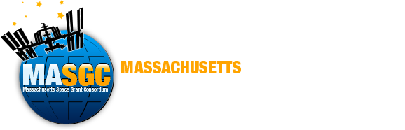

Curriculum Vitae
Academic background, training, and professional experience.
This page gives a brief overview of current appointments and training highlights. My full CV is
available as a PDF below.
Education
PhD, Kinesiology
University of Massachusetts Amherst
2024 to present
Graduate Certificate, Statistical and Computational Data Science
University of Massachusetts Amherst
2024 to present
MS, Kinesiology
California State University East Bay
2022 to 2024
Graduate Certificate, Footwear Design and Development
Lasell University, Newton, MA
2023
BS, Kinesiology, Minor in Business Administration
California State University East Bay
2019-2022
Experience
Research Assistant
Musculoskeletal & Orthopedic Biomechanics Laboratory
Aug 2024 to present
MOBL Lab Website
Teaching Assistant
Kinesiology Department, University of Massachusetts Amherst
Aug 2024 to present
Applied Biomechanics Consultant
AiKYNETIX
March 2024 – June 2024
Graduate Student Assistant
B.E.T. McNair Scholars Program, California State University East Bay
May 2023 to Aug 2024
Awarded Grant Proposals and Industry Support
Highlighted Award
The 2023 Nike Award for Athletic Footwear Research: Celebrating inclusivity in footwear science
Nike Sport Research Lab
$5,000 in footwear
Highlighted Award
Summer Fellowship
NASA Massachusetts Space Grant Consortium (MASGC)
$5,320


Highlighted Award
Research Support for a Route 66 Ultraendurance Study
Stryd Inc.
$1,500 in Stryd pods and software
Highlighted Award
SEED Research Grant
Cal State East Bay College of Education and Allied Studies
$4,000 in footwear
Highlighted Award
UMass Graduate School Predissertation Grant
UMass Graduate School
$1,496 in research supplies
Conference and research presentations
International Meetings
I have given podium and poster presentations at the 2023 and 2025 Footwear Biomechanics
Symposium and International Society of Biomechanics Congress, and the 2026 World Congress of
Biomechanics.
National Conferences
My master’s research has been presented at American College of Sports Medicine and the Joint
Statistical Meetings, providing experience sharing biomechanics and footwear research with a
variety of audiences with different academic backgrounds.
University Showcases & Research Competitions
Additional presentations include UMass and Cal State East Bay research symposia, a master’s
thesis defense, and 3-minute thesis and CSU-wide research competitions.